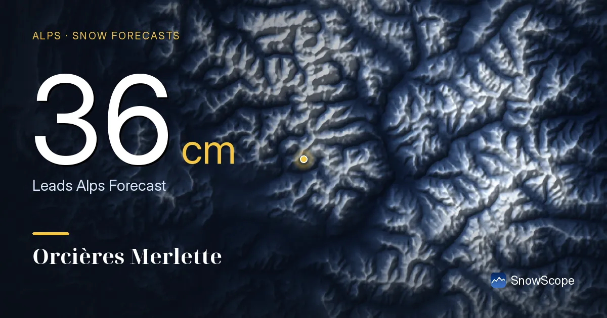

Orcières Merlette: 36 cm Leads Alps Forecast
Orcières Merlette leads the Alps forecast with 36 cm of new snow in three days, while Les Deux Alpes (33 cm) and La Grave (32 cm) also rank high. The snow concentrates on November 9 and 10; almost none falls on the 8th.
See the live snow forecast for Orcières Merlette in the SnowScope appSnow depth, powder alerts and the 3D map, free.
The forecast: Who leads?
Three resorts dominate the forecast. Orcières Merlette takes first with 36 cm over November 8 to 10. Les Deux Alpes follows with 33 cm, and La Grave, sitting higher, claims 32 cm—though it already has 50 cm at the summit and will grow that by a third. Puy-Saint-Vincent (30 cm) and Chaillol (29 cm) fill out the top five. The forecast came from a model run on November 6 and aims at the three-day window.
Today the region has just 661 of its 1,178 resorts with snow cover—down from 795 two days ago—so this incoming system matters. By November 10, we expect coverage to climb back to around 695 resorts with snow.
| Resort | Snow depth | New snow, 72 h | Coming, next days | Top |
|---|---|---|---|---|
| Orcières Merlette | 13 cm | 16 cm | 36 cm | 2,731 m |
| Les Deux Alpes | 46 cm | 15 cm | 33 cm | 3,511 m |
| La Grave | 50 cm | 20 cm | 32 cm | 3,543 m |
| Puy-Saint-Vincent | 7 cm | 14 cm | 30 cm | 2,664 m |
| Chaillol | 5 cm | 15 cm | 29 cm | 1,929 m |

When it comes: Timing matters
November 8 is a dry day across all five resorts—zero snow forecast. The system stalls or takes its time. November 9 then delivers 13 to 17 cm, depending on the resort. November 10 is the strongest day: 16 to 20 cm.
At Orcières Merlette specifically, the split is 0 cm, 17 cm, and 19 cm. At La Grave, the numbers are tighter (0, 13, 19 cm), but La Grave starts deep and gains less proportionally. Puy-Saint-Vincent, lower and drier, receives 0, 14, and 16 cm—meaning most of its new snow falls late in the window, and lower elevations may see slush by afternoon.

Altitude is destiny
The model shows strong height dependence, except at the highest resorts. At Orcières Merlette, the top (2,731 m) will gain 37 cm over the next seven days, the middle slope (2,278 m) only 28 cm, and the base (1,826 m) none. Les Deux Alpes mirrors this: top (3,511 m) gets 29 cm new snow, mid (2,397 m) just 18 cm, base (1,284 m) nothing.
But La Grave, starting at 3,196 m, is so high that it receives 34 to 35 cm at every level—base, middle, and top. High altitude is the great equalizer; nearly all precipitation falls as snow.
The freezing level trap
The freezing level—where rain becomes snow—tells us where slush happens. On November 7 it hovers around 2,160 to 2,290 m at Orcières Merlette; by November 10 it climbs to 2,900 to 3,160 m. That rise is crucial.
On the 10th, Orcières Merlette's base at 1,826 m sits well below the freezing level, so precipitation arriving there will be rain or wet snow turning to slush fast. At La Grave, the freezing level stays between 2,700 and 3,210 m across the whole period—its base at 3,196 m hovers right near the line, so some days snow, some days rain. Lower resorts like Puy-Saint-Vincent will see the freezing level well above their base on November 10, so almost all precipitation falls as rain or wet snow.
What the model sees and misses
The forecast ran November 6 and covers November 8 to 10. Early-season snow is thin: Orcières Merlette has only 13 cm at the top right now, so rocks and dirt may underlie the new 36 cm. Satellite saw snow on November 1 at Orcières and La Grave; Puy-Saint-Vincent had none then, and may not build up enough to stay.
November 10 brings warm air and wet snow that may not set up overnight. We model an area, not a single point, so local terrain effects can shift the boundary between rain and snow. Consult the official avalanche bulletin from Météo-France BERA if you venture off-piste.
What skiers should do now
If you are heading up, aim for November 9 afternoon or November 10 morning to catch fresh tracks. Upper slopes at 2,500 m and above will be safer to ski; lower terrain will be slushy by November 10 afternoon, especially if freezing levels rise as forecast.
La Grave and high passes offer the best snow-to-water ratio. Early season means fast changes: a forecast run from today can shift in tomorrow's update. The model is our best guide, not a guarantee. Watch local weather closely.
Tips for skiers
- Upper slopes (2,500 m+) will gain the most—37 cm at Orcières Merlette's top versus 28 cm at mid-slopes, so plan to ski high terrain.
- Target November 9 afternoon or November 10 morning before the snow sets; November 8 is dry, so today is not useful for fresh tracks.
- Watch the freezing level: on November 10 it climbs above 2,900 m at Orcières Merlette, so lower runs will turn to slush—ski early in the day.
- La Grave and high passes will ski best; nearly all precipitation there falls as snow even on the warmest days of the forecast window.
- Before going off-piste, check the latest avalanche bulletin from Météo-France BERA; early-season snow is unpredictable at 13 cm base depth.
About these numbers
Resort snow depths are the deepest snow on the resort's upper slopes from the SnowScope snow model (about 1 km, run of 6 November); they are estimates for an area, not a measurement at one point. Station values are measurements on the date shown. Forecasts can change. Always read the official avalanche bulletin before going off-piste.
Official avalanche bulletins: Météo-France BERA
Cite this report
For research, teaching or the press: the numbers and charts are free to reuse under CC BY 4.0 with this citation.
SnowScope (2026), Orcières Merlette: 36 cm Leads Alps Forecast, https://snowscope.app/blog/en/2026/11/alps-snow-forecast-7-november-2026.html, accessed 2026-11-07
SnowScope (Atlas Labs). (2026, November 7). Orcières Merlette: 36 cm Leads Alps Forecast. SnowScope snow reports. https://snowscope.app/blog/en/2026/11/alps-snow-forecast-7-november-2026.html
BibTeX
@misc{snowscope2026alpssnowforecast7novembe,
author = {{SnowScope (Atlas Labs)}},
title = {Orcières Merlette: 36 cm Leads Alps Forecast},
year = {2026},
month = nov,
howpublished = {\url{https://snowscope.app/blog/en/2026/11/alps-snow-forecast-7-november-2026.html}},
note = {Published 2026-11-07 13:36 UTC; accessed 2026-11-07}
}· CC BY 4.0 · Methods, data and tools →
Orcières Merlette: snow and temperature by height, this winter vs last (tools) →
Follow Orcières Merlette
Free: a message when fresh snow is coming, and the forecast every morning.
More snow reports

We rank French ski resorts by December snow odds and checked pass prices, starting from 36.00 EUR for an adult day pass in Les Karellis.

Glacier skiing from 68 EUR a day: we compared seven glaciers in France, Austria, Germany and Switzerland by price and by the snow they usually hold in December.

Ten European ski resorts ranked for December value, led by Les 2 Alpes with 75 cm of mid-mountain snow.